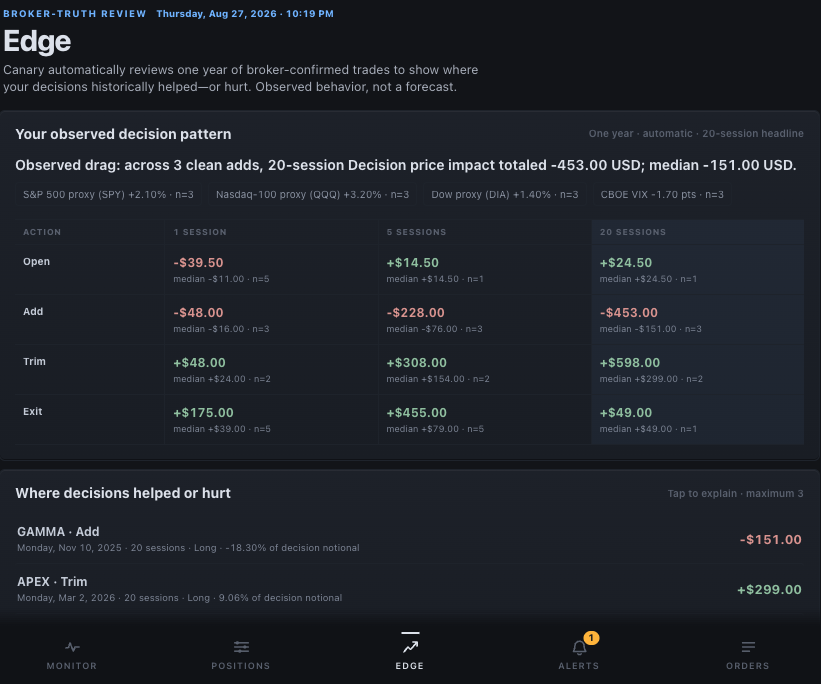

Phone pairing through the relay
Pair your phone to open Canary away from your home network.
Check your book and alerts away from home. An encrypted relay connects your paired phone to Canary. The app, the broker session and authorisation stay on your Mac.
Monitor has two sections, both composed by the daemon on your Mac. Review explains the last completed session. Ready shows the evidence for today's market, risk capacity and desk readiness. Positions, Edge, Alerts and Orders hold the detail.
Remote mode keeps the local-first design and makes the paired PWA reachable from outside your home network.
Pair your phone to open Canary away from your home network.
The relay forwards permitted app traffic and nothing else. New pairings, device grants, sessions and broker data access stay in the local app process.
Set up the relay connector with the maintainer, then pair your phone from your Mac. Get in touch to arrange access.
Run the app in remote mode on the Mac that already has TWS or IB Gateway running.
canary app --remote
# in another shell
canary app paircanary status is healthy enough for the app to read.canary app --remote. The app opens an outbound connector to the relay, so no inbound port is exposed on your Mac.canary app pair and open the printed URL on the phone. The URL carries a short-lived pairing id, a nonce and the relay route.canary setup app --remote, reload the LaunchAgent and then run canary restart --app without overriding flags.Remote access runs over TLS. The phone reaches the relay over HTTPS, and the Mac connector uses WSS. Anyone on the network between phone, relay and Mac connector would have to break TLS to read the traffic.
Pairing, device authorisation and broker access stay in the local app. The relay terminates TLS, so you must trust its operator. Transport encryption does not make the relay an end-to-end encryption boundary.
The default remote origin is https://remote.osauer.dev, and the connector URL is upgraded to wss://.
Remote requests cannot create pairing sessions. That action is accepted only from the app running on your Mac.
The relay does not receive an IBKR username, password, TWS socket or hosted broker connection. Your local TWS or IB Gateway remains the source.
This capture of Canary Edge in the app uses synthetic data. It shows the automatic one-year review, the 1/5/20-session matrix and ranked findings without exposing a broker account. Edge describes historical outcomes. It is an observation, not a forecast or a causal claim.
